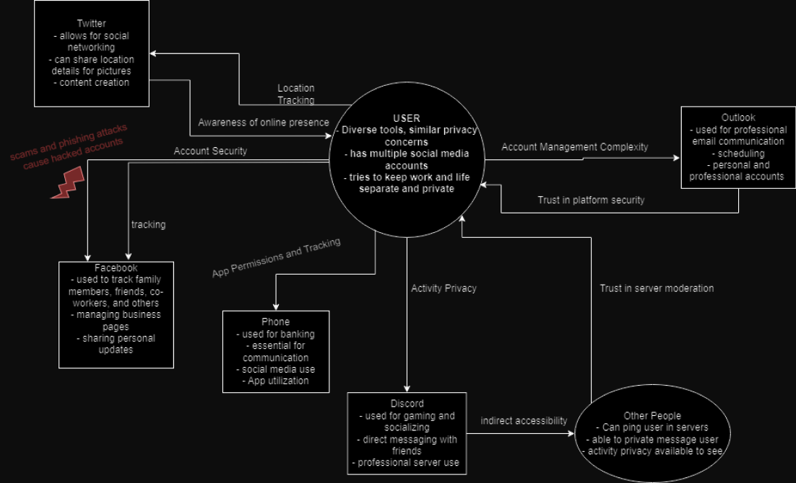
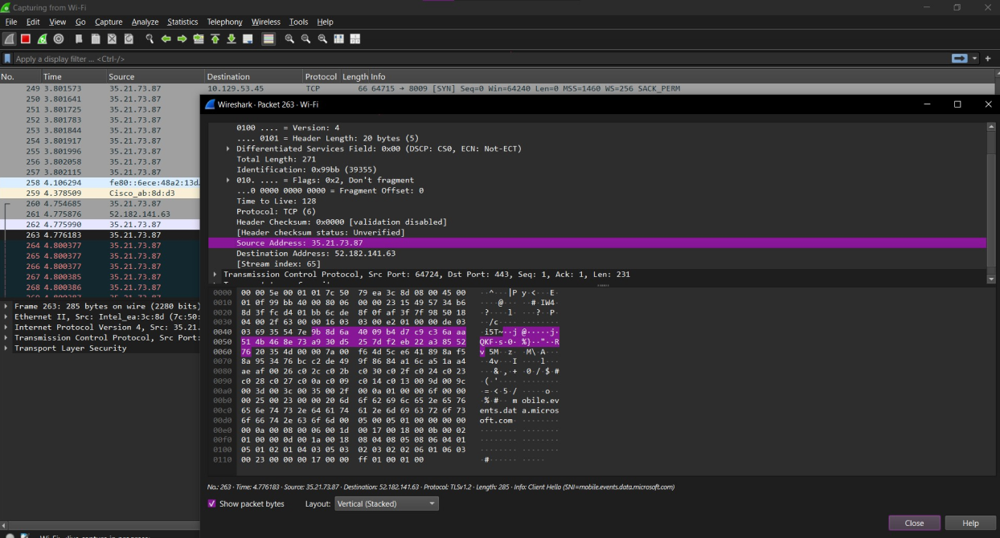
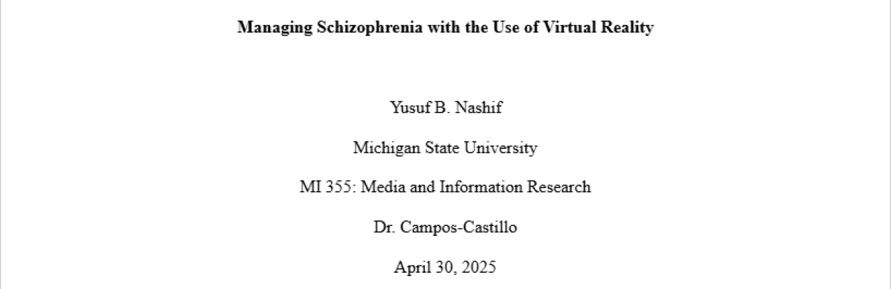

PORTFOLIO
Projects to become the best

Consolidated Privacy Diagram
Created a Consolidated Privacy Diagram by interviewing various individuals about their day-to-day technology usage.

WireShark
Used WireShark to capture and analyze network packets, identify suspicious traffic patterns, and validate filtering rules for secure network monitoring.

AI & Misinformation Research
Produced a research paper regarding AI & its effects on Social Media.

VR & Schizophrenia Research
Produced a research paper regarding Virtual Reality and its effects on Schizophrenia.